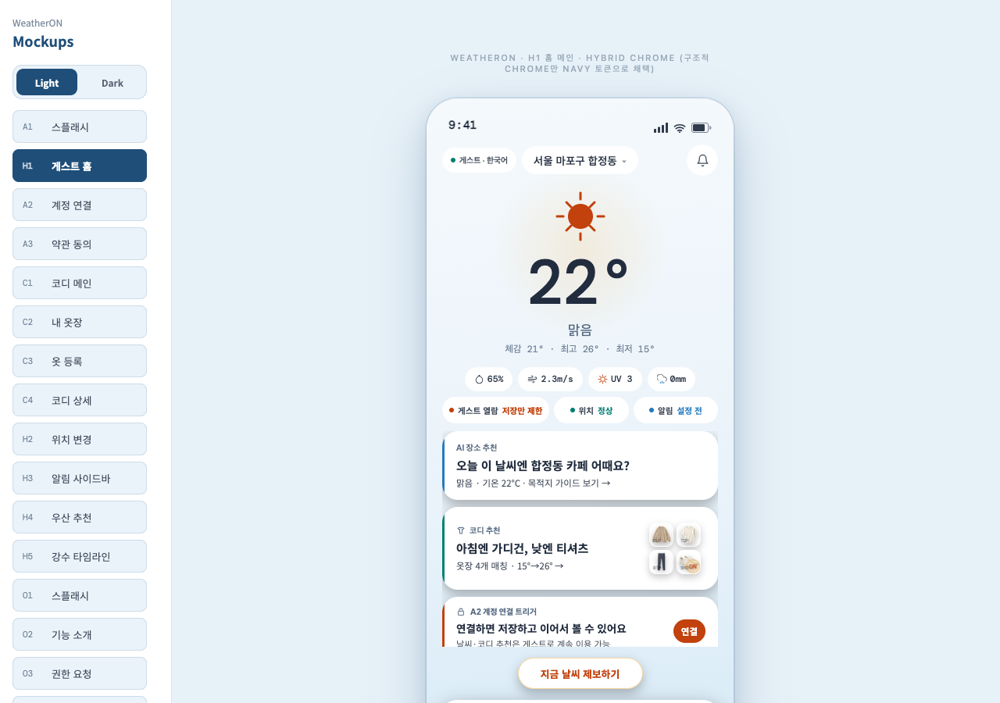

Clothes
아침엔 춥고 낮엔 더울 때
최저·최고 기온, 일교차, 체감온도를 묶어 레이어링 기준을 제안함.
WeatherON은 날씨 숫자를 보여주는 데서 끝나지 않음. 오늘 입을 옷, 챙길 우산, 신발, 언제 나갈지까지 한 화면에서 빠르게 정할 수 있게 돕는 데일리 준비 앱임.
기온과 강수확률을 알아도 옷, 우산, 신발, 출발 시간은 따로 판단해야 함. WeatherON은 이 번거로운 결정을 줄이는 데 집중함.
최저·최고 기온, 일교차, 체감온도를 묶어 레이어링 기준을 제안함.
강수량, 지속시간, 바람을 함께 보고 우산 필요도를 나눠 안내함.
출발지와 목적지를 비교하고, 도착 희망 시간 기준으로 출발 준비를 연결함.
WeatherON의 홈은 날씨 요약 화면이 아니라 외출 준비 화면임. 현재 위치와 목적지 기준으로 필요한 준비를 빠르게 확인함.
현재 날씨, 체감, 비 신호를 홈에서 바로 확인함.
옷장 프리셋과 스타일 태그를 기반으로 오늘 입을 세트를 제안함.
가입 전에도 추천을 먼저 경험하고, 저장과 알림이 필요할 때 계정을 연결함.

WeatherON은 날씨를 확인한 뒤 이어지는 실제 고민을 줄이는 기능에 집중함.
현재 날씨, 코디, 우산 신호, 목적지 준비를 한 화면에서 확인함.
매일 사용기온, 일교차, 강수, 바람, 사용자 스타일 기준을 조합해 착장 세트를 제안함.
코디 고민 절감비와 노면 조건, 목적지 상황을 함께 보고 우산과 신발 준비를 안내함.
외출 준비출발지와 목적지 날씨를 비교하고 출발 시각, 우산, 신발 준비를 연결함.
이동 전 확인외출 준비, 강수, 목적지 알림을 필요한 순간에 받을 수 있게 설계함.
놓침 방지여행 일정별 날씨, 코디, 챙길 물건 추천은 이후 확장 기능으로 준비함.
예정 기능WeatherON은 기존 날씨 앱을 대신하기보다, 날씨를 본 다음 사용자가 해야 하는 판단을 덜어주는 앱임.
추천은 먼저 보여주고, 계정 연결과 권한 요청은 필요한 순간에만 안내하는 흐름을 지향함.
날씨와 코디 추천을 먼저 보고, 저장이 필요할 때 계정을 연결함.
위치 권한을 켜지 않아도 수동 위치로 추천을 확인할 수 있게 설계함.
왜 이 옷과 우산을 추천하는지 날씨 기준을 함께 보여주는 방향임.
처음에는 매일 쓰는 준비 기능에 집중하고, 이후 여행과 개인화를 넓힘.
처음에는 출근, 등교, 약속 전 준비를 빠르게 돕고, 이후 여행과 시즌 기능으로 확장함.
홈, 코디, 우산·신발, 목적지 미리보기, 알림 기본 구조
자주 가는 곳의 날씨 비교, 출발 알림, 준비 가이드 개선
스타일 기준과 착용 기록을 반영한 추천 고도화
여행 일정별 날씨, 코디, 챙길 물건 추천 확장